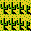
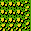
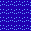
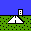
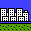
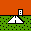

勝利条件は敵首都占領。また、敵を全滅させた上で首都その他の拠点を自軍ユニットで埋 め、生産不能に追い込んでも勝利となる。
まずマップロードで攻略したいマップをロード。その後、ブルー軍をUSER, レッ ド軍をFAMICON(逆でもいいけど、プレイヤーがブルー軍を持つことを前提としたバラ ンス、らしい)にして、スタートボタンで開始。なお、マネーは都市からの収入に影 響する(値が大きいほど収入が増える)。COM側はマネー100になるようなので、初心者 は100にするのがいいだろう。
セーブデータがある場合は CONTINUE で再開できる。
「レート」はユニットの価格に影響する。基準価格にレートを乗じたものが実際 の価格となる。レートはランダムに変動するが、序盤では上昇する傾向にある(株式 のように、ユニットを買うと上がるようになっているのかも)。
「7H」というのは、現在カーソルのあるマスと自軍首都との間の距離を表す。
"U" の列はユニット数、"X", "Y" の列は座標、"FU" の列は燃料残量を表す。
"TRN" の列は、輸送ユニットと被輸送ユニットとの関係を表している。">11" というのは11番のユニットに乗車しているという意味。また、"< 2" というのは2 番のユニットを乗せているという意味。
"MOV" の列は移動状態を表す。"GO" は移動前、"END" は移動済、"GAS" は補給済 だが移動前、"TRN" は輸送ユニットに乗車していることを示す。
"S" の列はユニットの熟練度を表す。生産した直後は EXP が 0 なので "E" になっ ている。EXP を稼ぐと D, C, B, A と上昇していく(EXP16 くらいで B になることを 確認)。
カーソル位置のユニットを移動させる。移動は1ターンに1回。自軍、敵軍を問 わず、ユニットを通り抜けて移動することはできない。敵ユニットと重なると戦術 フェイズへ移行する。
移動中に敵ユニットと隣接した場合は、そこから更に敵を避けて移動すること はできない。ただし、移動前に既に敵と隣接している場合は一回だけ回避が可能。 回避したい場合は、移動しようとすると敵リストが表示されるのでBボタンでキャ ンセルし、さらにBボタンで移動終了もキャンセルし、移動したい方向を押す。
ユニットは消費した移動力と同数の燃料を消費する。航空ユニットの場合、ター ン終了時に燃料が5以下(この値はちょっと曖昧だが、7なら生き残ることを確認し ている)だと墜落してしまう。余裕を持って補給すべし。
歩兵、工兵の場合、中立または敵軍の拠点ヘクス上で移動終了することで、そ の拠点を占領できる。明示的に移動終了を行わなければならないことに注意(例え ば、輸送ユニットから拠点ヘクスへ降車してもまだその時点では占領が行われな い)。
歩兵、工兵の場合、移動後に隣接したイロコイスまたは補給車に乗車すること ができる。その場合、乗車対象のユニットは移動終了状態となる。よって、可能な らば乗車対象ユニットを先に移動させる方が得である。
イロコイス、補給車の場合、歩兵や工兵を乗車させていれば、移動後にそのユ ニットを周囲1マスのどこかに降車させることができる。その場合、降車したユニッ トは移動終了状態となる。
ユニットを生産し、カーソル位置に配置する。生産可能なヘクスは、首都、首 都の周囲1マス(荒地、川、海、山岳は不可)、首都付近にある都市または空港である。首 都と都市では地上ユニット、空港では航空ユニットを生産できる。
自軍ユニット数は32が上限。それを超えて生産することはできない。
カーソル位置のユニットに対して燃料、弾薬の補給を行う。補給可能なヘクス は、補給車の周囲1マス、空港、首都、都市である。空港は航空ユニット、首都と 都市は地上ユニット、補給車は地上ユニットと垂直着陸可能な航空ユニット(イロ コイス、ヒューイコブラ、ハリアー)に対して補給を行う(受け側のユニットが補給 車の進入できない地形(たぶん)にいると補給不可)。空港、首都、都市で補給を行っ た場合は、ユニット数も2〜4程度回復する。
補給は移動前にしか行えない。なお、敵と隣接していても補給は可能。
補給を行うと若干の資金を消費する。
補給可能な全ユニットに対して補給を行う。ターン開始時にこのコマンドを実 行するのがいいだろう。
カーソルを自軍首都に移動させる。
ユニット一覧を見る。
自軍ターンを終了する。
サブメニュー(後述)を開く。
両軍の担当(プレイヤーorCOM)を変更する。
セーブしてタイトルに戻る。セーブデータは電源を切っても残るが、CONTINUE すると失われるのでセーブ&リトライは不可。あくまで中断用。
降伏する。当然負けになる。
BGMとサウンドをON/OFFする。
戦闘アニメーションに関する設定。REAL, FAST, AUTO がある。FAST はアニメー ションを省略して高速化する。REAL と AUTO の違いは今のところ不明。
"EXP" は経験値、"AVO" は回避率、"TER" は地形効果、"NUM" はユニット数を表 す。
"ATK" は恐らく機体性能のみを見たときの命中率。"COM" は、そこに経験値や地 形効果などを加味した実際の命中率と思われる。
EXP の 1/2 (端数切り捨て)が AVO になるらしい。EXP は敵ユニットを全滅させ ると1ポイント上昇する。
※航空ユニット(移動タイプA)はどの地形も移動力消費1で通過可能。
※航空ユニットには地形効果が付かない。
| グラ | 名称 | 移動B | 移動C | 移動D | 地形 | 備考 |
|---|---|---|---|---|---|---|
| 平地 | 1 | 2 | 1 | 5 | ||
| 森 | 2 | 2 | 1 | 50 | ||
| 道路 | 1 | 1 | 1 | 0 | ||
|  | 砂漠 | 2 | 2 | 1 | 10 | |
|  | 荒地 | 3 | 3 | 2 | 15 | 補給車は通過不能 |
| 川 | × | × | 2 | 0 | AMX10-RCは通過可能(移動力3消費) | |
|  | 海 | × | × | × | 0 | |
| 山 | × | × | 2 | 60 | AMX10-RCは通過可能(移動力4消費) | |
| 自軍首都 | 1 | 1 | 1 | 50 | ||
|  | 自軍空港 | 1 | 1 | 1 | 10 | |
|  | 自軍都市 | 1 | 1 | 1 | 20 | |
| 敵軍首都 | 1 | 1 | 1 | 50 | ||
|  | 敵軍空港 | 1 | 1 | 1 | 10 | |
| 敵軍都市 | 1 | 1 | 1 | 20 | ||
| 中立空港 | 1 | 1 | 1 | 10 | ||
| 中立都市 | 1 | 1 | 1 | 20 |
| グラ | 名称 | 種別 | 価格 | 移動 | 燃料 | 武装 | 備考 |
|---|---|---|---|---|---|---|---|
| F-16C | 戦闘機 | 2500 | 12, A | 55 | ミサイル*4, 機関砲*5 | ||
| ハリアー | 戦闘機 | 1800 | 10, A | 45 | ミサイル*2, 機関砲*4 | ||
| A-10 | 攻撃機 | 1800 | 8, A | 45 | 爆弾*4, 機関砲*4 | ||
| コルセア | 攻撃機 | 1500 | 10, A | 55 | 爆弾*2, 機関砲*4 | ||
| ヒューイコブラ | 攻撃ヘリ | 700 | 7, A | 45 | ミサイル*4, 機関砲*5 | ||
| イロコイス | 輸送ヘリ | 200 | 6, A | 45 | 機関砲*4 | 歩兵or工兵1ユニットを輸送可能 | |
| レオパルドII | 戦車 | 600 | 6, B | 60 | 砲弾*8, 機関砲*4 | ||
| AMX10-RC | 装甲車 | 250 | 8, B | 80 | 砲弾*5, 機関砲*3 | 川を渡れる(移動力3消費)。山に登れる(移動力4消費) | |
| ゲパルト | 対空戦車 | 400 | 6, B | 55 | 機関砲*8 | ||
| ローランドII | 地対空ミサイル | 400 | 6, B | 50 | ミサイル*4 | ||
| 補給車 | 150 | 6, C | 99 | 機関銃*4 | 荒地は通れない | ||
| 輸送トラック | 100 | 6, C | 80 | 機関銃*4 | 歩兵or工兵1ユニットを輸送可能 | ||
| 歩兵 | 100 | 3, D | 99 | 機関銃*9 | |||
| 工兵 | 200 | 2, D | 99 | ミサイル*3, 機関銃*3 |
表は横に見ること。
| F16 | ハリ | A10 | コル | ヒュ | イロ | レオ | AMX | ゲパ | ロー | 補給 | 輸送 | 歩兵 | 工兵 | |
|---|---|---|---|---|---|---|---|---|---|---|---|---|---|---|
| F-16C | ○ | ○ | ○ | ○ | ○ | ◎ | △ | △ | △ | △ | ○ | ○ | △ | △ |
| ハリアー | △ | ○ | ◎ | ○ | ○ | ◎ | △ | △ | △ | △ | ◎ | ◎ | ◎ | ◎ |
| A-10 | × | × | × | × | △ | △ | ◎ | ◎ | ◎ | ◎ | ◎ | ◎ | ◎ | ◎ |
| コルセア | × | △ | △ | △ | △ | △ | ◎ | ◎ | ◎ | ◎ | ◎ | ◎ | ◎ | ◎ |
| ヒューイコブラ | × | × | × | × | × | × | ○ | ◎ | ○ | ○ | ◎ | ◎ | ○ | ○ |
| イロコイス | × | × | × | × | × | × | × | × | × | × | × | × | × | × |
| レオパルドII | × | × | × | × | × | × | ○ | ○ | ○ | ○ | ◎ | ◎ | ◎ | ◎ |
| AMX10-RC | × | × | × | × | × | × | × | ○ | △ | ○ | ○ | ○ | ○ | ○ |
| ゲパルト | △ | ○ | △ | ○ | ○ | ○ | × | △ | △ | △ | ○ | ○ | ○ | ○ |
| ローランドII | ○ | ◎ | ○ | ◎ | ◎ | ◎ | × | × | × | × | × | × | × | × |
| 補給車 | × | × | × | × | × | × | × | × | × | × | × | × | × | × |
| 輸送トラック | × | × | × | × | × | × | × | × | × | × | × | × | × | × |
| 歩兵 | × | × | × | × | × | × | × | × | × | × | × | × | △ | △ |
| 工兵 | × | × | × | × | △ | △ | △ | △ | △ | △ | ○ | ○ | △ | △ |
兵員を輸送しているユニット(イロコイスまたは輸送トラック)が攻撃を受けると、 乗車している歩兵(工兵)ユニットが消滅することがある。ただしこれはランダムなの で、たとえ残り1体まで撃ち減らされても中の歩兵は無事、ということもある。
序盤は輸送ヘリと歩兵をペアで生産し、中立の拠点を占領して収入を確保する。 一方でAMXを少しずつ生産し、森や山岳に陣取って敵の前進を阻む。
中盤になると収入が多くなってくるので、AMXを少しずつレオパルドに切り替え、 地上戦でじりじりと押していく。
終盤は敵もレオパルドを投入してくるので、コブラを数個生産して対処する。
敵首都が射程内に入るあたりになると敵は警戒態勢に入り、首都とその周辺にゲ パルトを量産して防御陣を築くようになる。ゲパルトは地上戦でもかなり強いので、 こうなってしまうと切り崩すのに非常に時間がかかる。そこで、可能ならば警戒態勢 に入られる直前に空の輸送ヘリやコルセアなどの航空ユニットを敵首都とその周囲に 突っ込ませておいてスペースを潰してしまうのがいいと思う。
首都の占領は、周囲の敵を排除した上で輸送ヘリを使って首都に歩兵(できれば工 兵)を降下させるのが手っ取り早い。これなら歩兵(工兵)が1ターン持ちこたえてくれ れば即勝ちになる。
基本的にCOMはゲパルト量産を好むので、攻撃機は高価な割に効果が薄い。レオパ ルドはゲパルトに対して抜群に相性がいいので最も頼りになる。地形が狭隘でどうし ても攻撃機が必要な場合、資金が潤沢にあるならA-10量産がおすすめ(A-10はそう簡 単には全滅しないので)。それほど資金に余裕のない中盤ではコブラが便利(レオパル ド等に対しては最強の攻撃力を発揮する)。
ヘリを使いたいが空港がいい位置にない、という場合は、補給車を移動式給油所 として利用する手もある。
輸送ヘリや攻撃ヘリを大量生産して首都を直撃する作戦も考えられるが、地形そ の他の条件が揃っていないと成功させるのは厳しい。
空の輸送ヘリを道路脇に置いておくと、COMの地上部隊はそれ以上進軍してこなく なる…かも(特にレオパルド等、対空性能があまりよくないユニットが先頭にいる場 合)。足止め用に。これに限らず、安くて弱いユニットを盾にするのは割と有効なテ クニック。